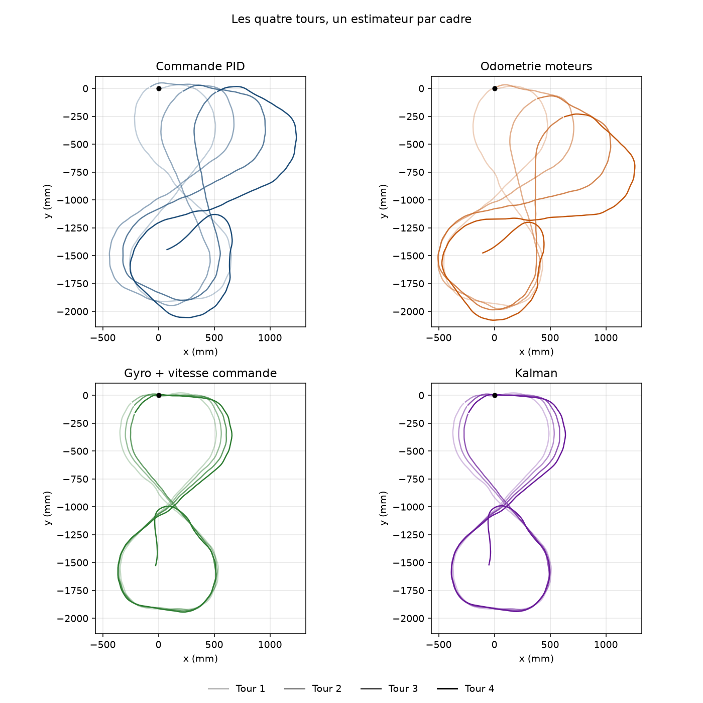
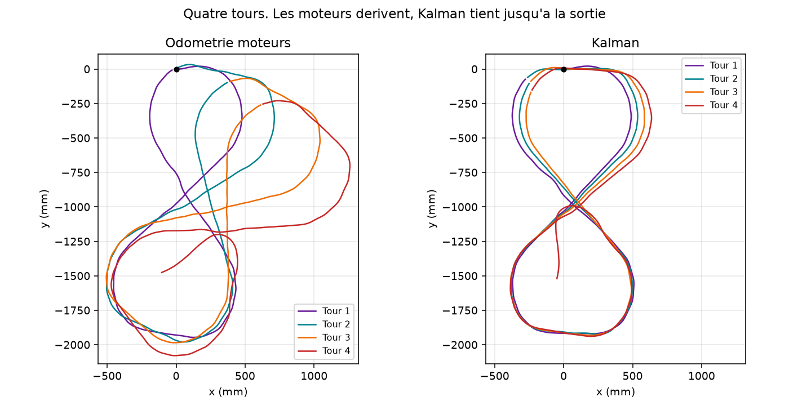
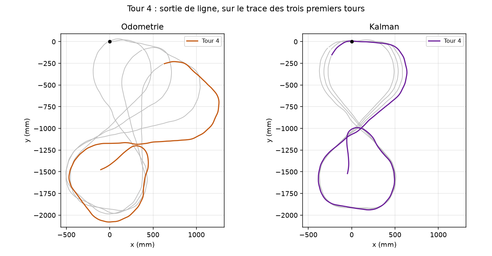
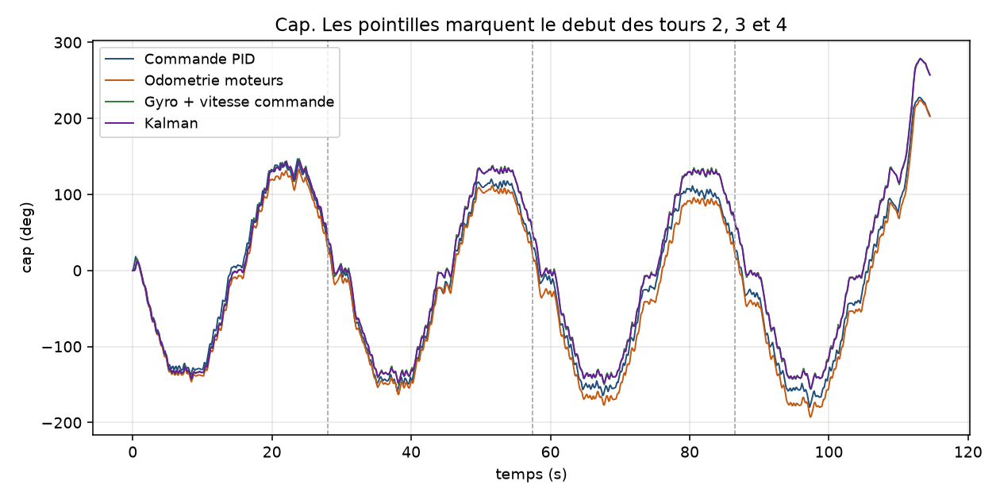
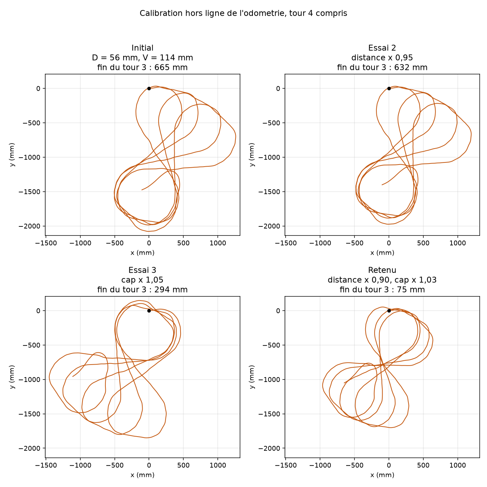

1041 echantillons sur 114.5 s, tours 1, 2, 3, 4. Ecart a l'origine a la fin du tour 3 : Commande PID : 515 mm. Odometrie moteurs : 665 mm. Gyro + vitesse commande : 276 mm. Kalman : 292 mm. Le tour 4 quitte la ligne : son ecart final n'est pas une fermeture de boucle. Calibration retenue sur les tours 1 a 3 : distance x 0.9, cap x 1.03, ecart fin de tour 3 75 mm.

Les quatre tours. Chaque cadre est un estimateur, le trait clair est le tour 1 et le trait fonce le tour 4.

Memes axes. Le tour 4 montre la derive des moteurs et la sortie, Kalman reste groupe avant.

Tour 4 en couleur sur les tours 1 a 3 en gris. L'odometrie suit la sortie, Kalman aussi, avec un autre cap.

Le filtre suit le gyro. L'ecart avec les moteurs grandit, puis le tour 4 l'ouvre franchement.

Trois essais de D et V rejoues sur le meme CSV, puis le couple qui rapproche le plus la fin du tour 3.